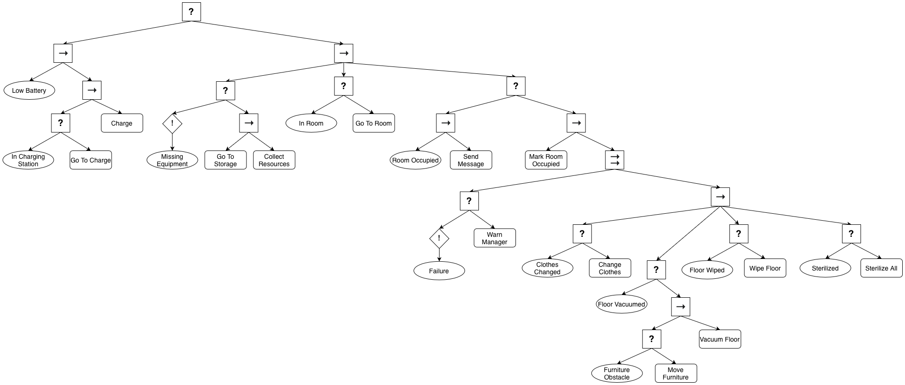
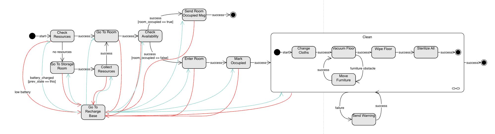
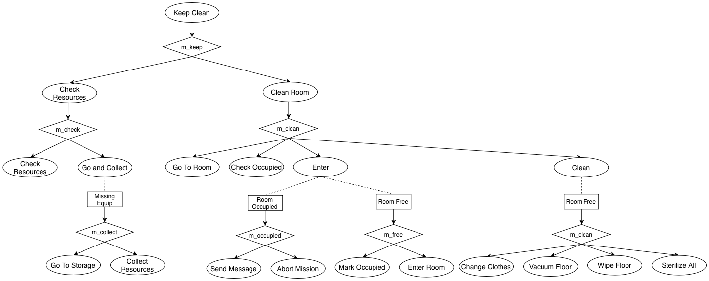
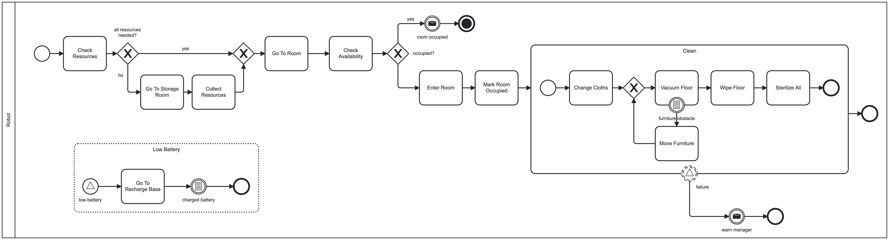

Every room that reaches more than 1 cfu/cm2 of Staphylococcus aureus must be cleaned within the next 30 minutes. The assigned robot must check if it has all the resources to fulfill the tasks. In the case of missing equipment, the robot must go to the storage room to collect the equipment or assign the go-to-storage task to a colleague. As the robot reaches the room, it must check if it is occupied. If the room is occupied, a message should be sent to the manager and the mission aborted. Otherwise, the robot should enter the room and mark it as occupied. The cleaning task must be performed in order: (i) change the furniture's covers, towels, and clothes; (ii) vacuum the floor, moving furniture when necessary; (iii) wipe the floor, and (iv) sterilize all furniture and equipment in the room. In case of failure in performing any of the steps, it immediately warns the sector manager, but does not stop executing the mission. In case of a low battery, recharge it and come back to finish the task.
Askarpour, Mehrnoosh, et al. Robomax: Robotic mission adaptation exemplars. 2021 International Symposium on Software Engineering for Adaptive and Self-Managing Systems (SEAMS). IEEE, 2021.


To avoid label duplication we highlighted in red all the transitions with a label low_battery and in teal the transitions labeled battery_charged

